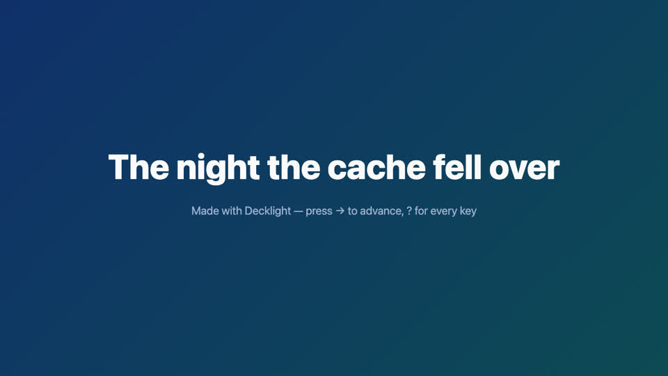
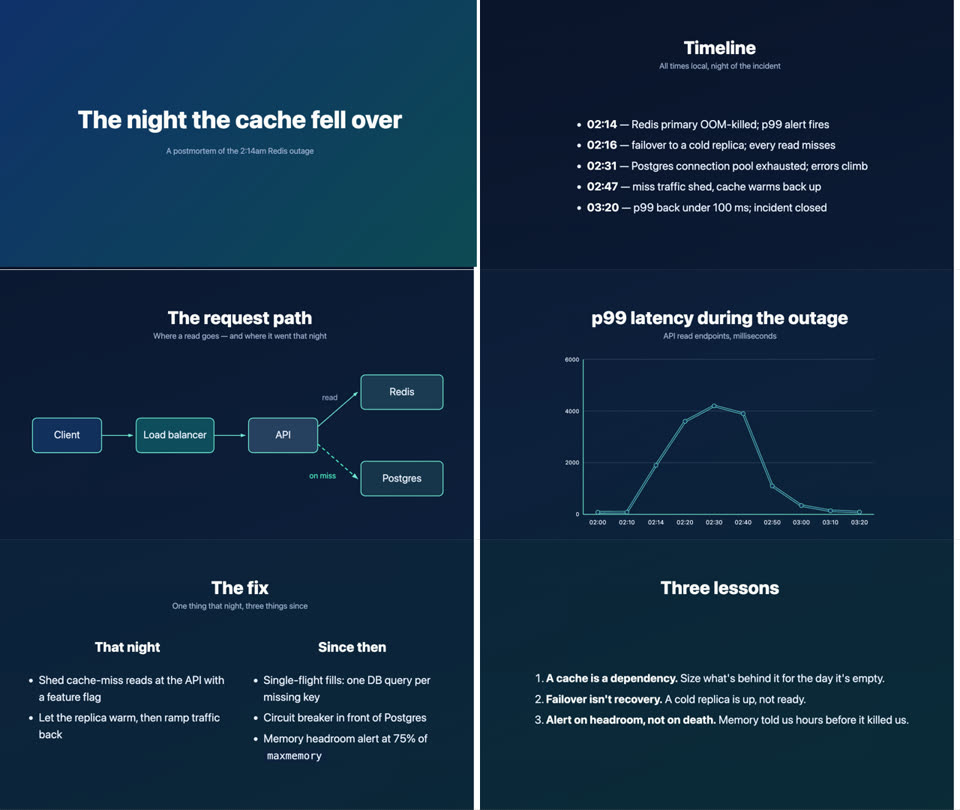
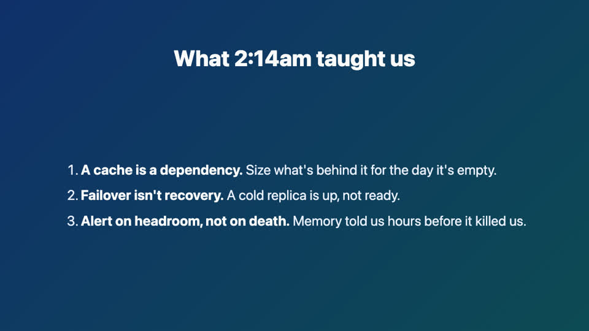
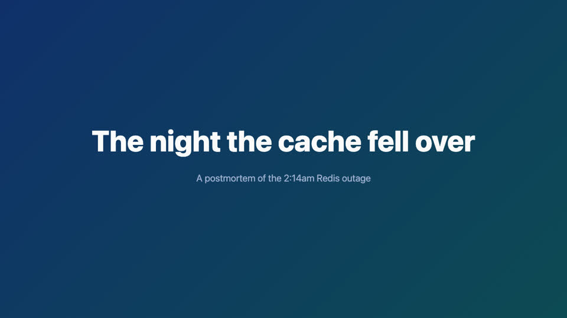
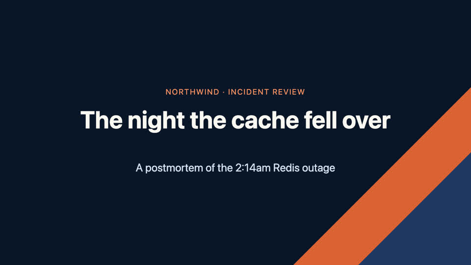
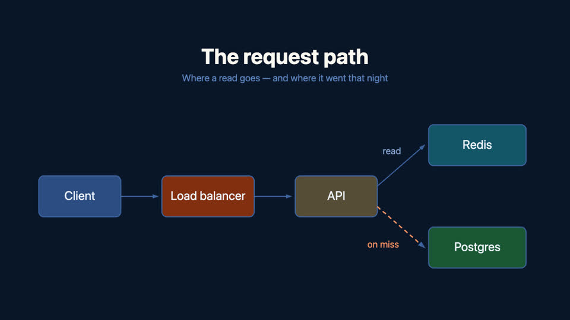
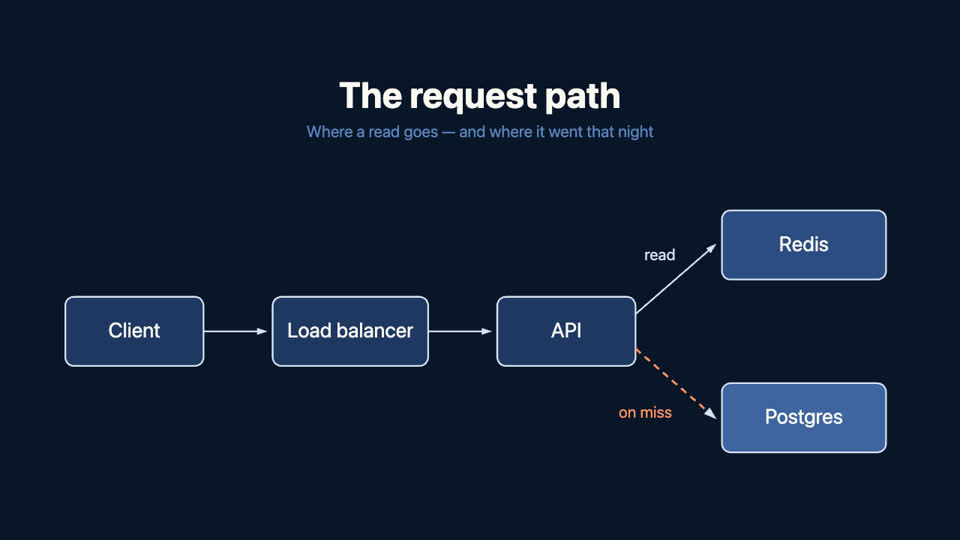
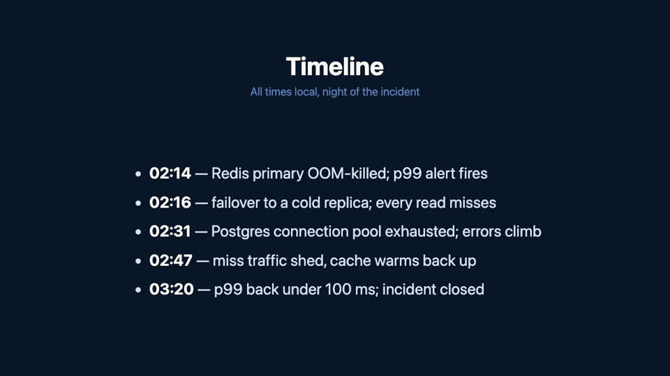
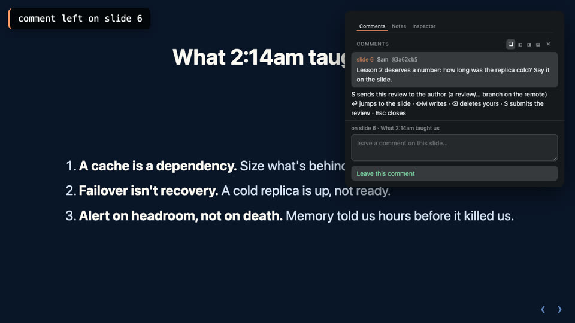
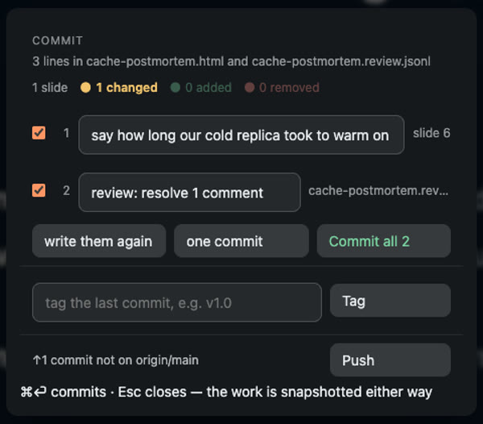

One postmortem, built live with Decklight
It's 2:14am. The cache just fell over. The talk is due Friday.

init

The talk's own latency chart. Go on, try it on this deck.
then in the deck: / → Design systems…, Space, ⏎





[exhales] … [pause] …

decklight.io/postmortem is live
npx decklight@latest init "Your talk"